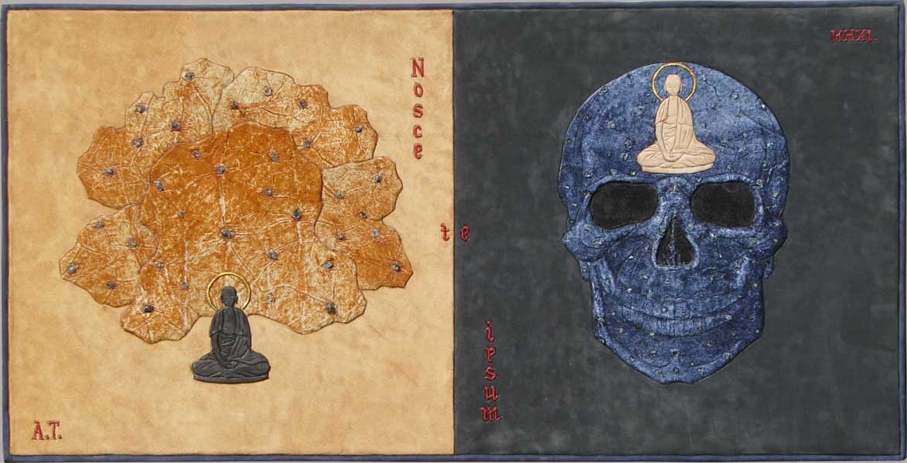

|  | |
| Сутра сердца украинского барокко. Кожа, флюорит, апатит, горный хрусталь. 35 x 75 см. |
|
Sutra of the heart of the Ukrainian baroque. Leather, fluorite, apatite, rock crystal. 35x 75 cm. |
|
Сутра серця українского барокко. Шкіра, флюорит, апатит, гірський кришталь. 35 x 75 см. |
|